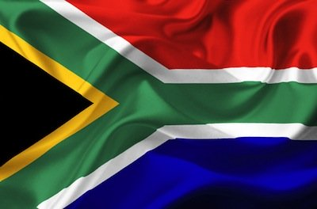

Dean Nafelanji
About Me
My name is Dean Nafelanji and I am studying Web Development. I was born in Harare, Zimbabwe. And I am currently living in South Africa. I am currently working as a AML+CFT Team Lead. I enjoy learning about technology, programming, and building useful digital tools
Cape Town, South Africa

I currently live in Cape Town, South Africa. The country is known for its diverse cultures, beautiful landscapes, and vibrant cities. Cape Town is often called the "Mother City" of South Africa, a place where history, nature, and modern life blend seamlessly. Nestled between the iconic Table Mountain and the Atlantic Ocean, the city offers breathtaking views and a unique coastal charm. It is big, beautiful, and full of life, home to world-class beaches, bustling markets, and a thriving arts food scene.